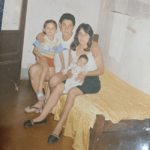
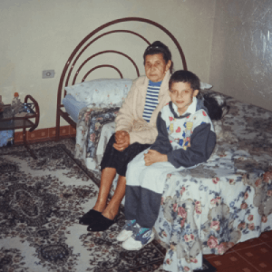
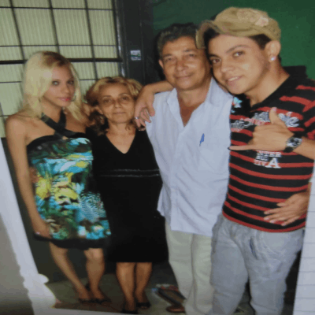

Nascida no interior de São Paulo em 1987, porém criada no interior do Mato Grosso do Sul, era uma "menino" peculiar e que chamava a atenção de todos, não no sentido de admiração mas sim de estranhamento, como se todos vissem algo de errado em mim, eu mesma via desde pequena as diferenças de comportamento e até mesmo, físicas, de outros meninos, o que muito mais tarde e com muita luta e sofrimento, descobri o motivo, era uma mulher trans intersexo.
Criada no sítio de minha avó, tive uma infância mais que perfeita, brincava na rua com as outras crianças e primos, a vida calma da cidade de interior na década de 90, nos dava ares de liberdade e segurança, coisa que as crianças de hoje desconhecem, infelizmente.Todavia eu almejava por estudar e morar em uma cidade grande, já tinha planos ambiciosos desde cedo, até porque, eu era uma das melhores alunas da escola, muito aplicada, o que contrastava com os objetivos da maioria das outras crianças que não tinham planos de mudar de cidade.
Sempre fui diferente dos demais e não me sentia pertencente ao grupo dos meninos, tinha traços muito femininos e delicados, sendo confundida por menina várias vezes na frente de meus pais e avós. Minha avó paterna, com um instinto de defesa, passou a me levar para todos os lugares na tentativa de me blindar dos olhares maldosos das pessoas que me estranhavam, descobri o amor e o acolhimento da minha família desde cedo, o que me torna extremamente privilegiada, em relação a outras pessoas trans que são expulsas de casa simplesmente por ser quem são
Adorava ler livros, aprendi a gostar de literatura desde pequena, Machado de Assis, José de Alencar, José lins do Rego eram meus autores favoritos, eu sentia que poderia chegar longe com os estudos, porém, mal sabia dos percalços que eu viria e ter na vida pré adulta.
Aos 14 anos, nos mudamos para a capital, comecei a frequentar o ensino médio e aquele meu jeito meigo e delicado de ser, que pensava deixar de ter com a puberdade, não aconteceu, nem os trejeitos sumiram, nem a puberdade chegou, ficava cada dia mais visível que tinha algo de errado com meu corpo biológico. Na tentativa de saber o que se passava, meus pais me levavam a dezenas de médicos e profissionais, nenhum deles nos dava respostas, até que um dia, um médico do SUS, de maneira empática, levantou a hipótese da transexualidade, visto que não possuia hormônios masculinos o suficiente para um "homem" aos 17 anos e nenhum dos caracteres sexuais masculinos.
Sem um diagnóstico claro, o mais próximo que conseguiram foi o de pseudo-hermafroditismo, termo hoje substituído por "pessoa intersexo", comecei então o tratamento para a cirurgia de redesignação sexual aos 18 anos e concomitantemente, meu pai foi diagnosticado com câncer, começou aí a pior fase da minha vida, lutava por mim e pelo meu pai ao mesmo tempo, sofrendo discriminação, humilhações e até abusos por parte das autoridades. Enfim aos 23 anos, me submeti a tão sonhada cirurgia de redesignação sexual, um alívio na alma pós cirurgia me arrebatou de uma maneira que até hoje me faltam palavras para explicar. Hoje, com a medicina um pouco mais avançada, ainda não conseguiram explicar o motivo da minha intersexualidade.
Então redesignada, com o sexo feminino e documentos adequados ao meu sexo psicológico, comecei a trabalhar como servidora pública, me casei meses após minha recuperação da cirurgia, me sentia completa como nunca havia me sentido antes, mesmo com os olhares tortos e exclusão social dos meus colegas de trabalho, nada mais me poderia atingir, até que o câncer levasse meu pai de mim, o homem que mais me amou e me protegeu na vida, já não se fazia presente.
Tempos depois, comecei a experimentar o que se passa uma mulher no nosso país, com a violência doméstica, o descaso do poder público na proteção das vítimas, me dei conta de como é difícil ser uma mulher no Brasil, seja ela cisgênero ou transgênero, os homens cisgêneros ainda continuam com seus belos e exclusivos privilégios. Depois de experimentar essa amarga realidade, passei a reavaliar minha vida, priorizar os meus objetivos e aprendi que não preciso estar com alguém que me faz mal para ser feliz, comecei um processo de reaprendizado do autoperdão e do amor próprio e tudo mudou, dessa vez, para melhor.
As experiências boas e ruins me tornaram cada vez mais forte, mais disposta, comecei a aprender inglês sozinha pois não tinha dinheiro para estudar, aprendi a falar e me comunicar com falantes nativos de inglês, entrei na faculdade de Direito, trabalhei em um respeitado Tribunal Federal como estágiária, que apesar da boa experiência, percebi que não queria ficar presa em um local como servidora pública, estagnada, gostava de criar, viajar, ter novas idéias, foi então que decidi investir na área da tecnologia.
Após a pandemia, descobri que o mundo estava ficando cada vez mais digital e que a demanda por profissionais na área de tecnologia só crescia, porém, a participação de mulheres era pequena, de pessoas trans então era ínfima, assim como fiz com o inglês e espanhol, comecei a estudar programação sozinha, com materiais soltos na internet, até que surgiu a oportunidade de fazer o vestibular na área de desenvolvimento de software na minha cidade no interior de São Paulo, fiz o exame sem muitas expectativas, apenas para passar pela experiência e surpreendentemente, passei em 2° lugar, sem ao menos estudar para a prova. Com a matrícula na faculdade, os tutores me enviaram um link de uma plataforma de estudos em programação para mulheres chamada 'Descodificadas' e aqui estou, pronta pra mais um desafio em minha vida, ao qual eu tenho a plena certeza que vou conquistar, pois como de costume, eu não fujo das batalhas.
Assista ao vídeo abaixo que explica melhor sobre identidade de gênero e transexualidade.
O Núcleo TransUnifesp, de concepção e abrangência multicampi, multiescolas e institutos, multisaber e transdisciplinar, ligado à Coordenadoria de Direitos Humanos da Pró-Reitoria de Extensão e Cultura da Universidade Federal de São Paulo e, na assistência, vinculado ao Hospital São Paulo, atua fortalecendo a comunidade nos âmbitos acadêmico, científico, político e social, no sentido de promover o bem-estar da população de travestis, mulheres transexuais, homens trans, de gênero não-binário, e Intersexo.